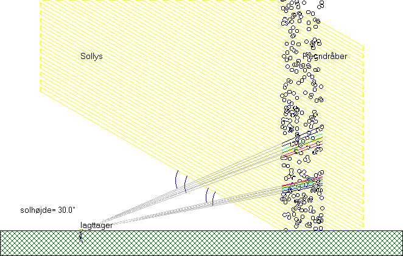
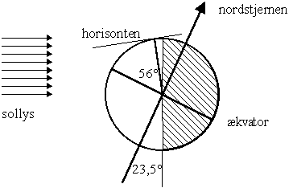

Dette billede viser de to regnbuer: den primære og den sekundære. Billedet skal vise, at flytter personen på jorden sig eller flytter solen sig, dvs. solstrålernes vinkel med jorden ændres, så flytter regnbuerne sig også; men vinklen mellem solstråler og de regnbuer, som personen ser, ændres ikke! Vinklerne er markeret med blå buer. (»Mærke« er valgt i menuen i Regnbuen).
Man kan måle vinklerne på en udskrift, men husk, at vælge vinkeltro udskrivning.
Læg mærke til rækkefølgen af farverne i regnbuerne og mål vinklerne mellem solstråler og lys fra regnbuen for rødt og violet i begge regnbuer med en vinkelmåler.

Benyt billedet til højre af jorden kl. 12 middag ved vintersolhverv til at finde solens højde over horisonten.
Tegn et tilsvarende billede af jorden kl. 12 middag ved sommersolhverv. Hvor højt på himlen ses regnbuen på de pågældende tidspunkter?
Hvor højt på himlen ses regnbuen, når solen står i horisonten?